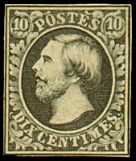
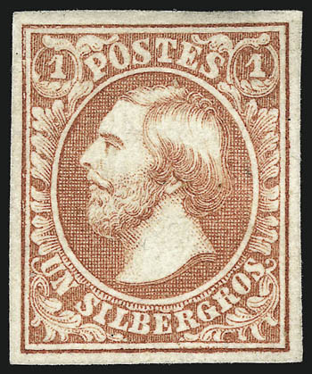
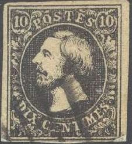
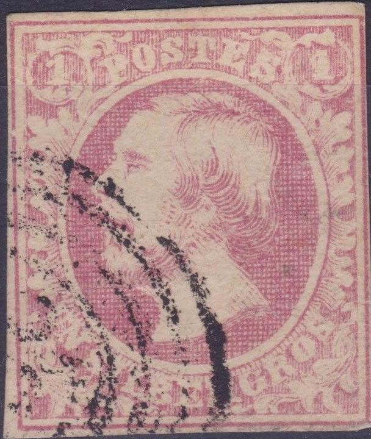
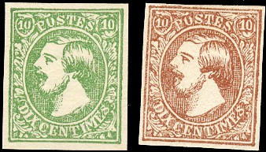
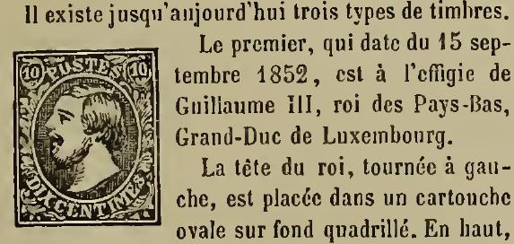

Return To Catalogue - Luxembourg 1859-1881 - Luxembourg 1882-1913 - Luxembourg 1914-1920 and miscellaneous - Luxembourg, cancels on the first issues
Note: on my website many of the
pictures can not be seen! They are of course present in the
catalogue;
contact me if you want to purchase it.
For forgeries of the Luxemburg stamps see: http://www.luxcentral.com/stamps/LuxFakes.html. A nice site on the cancels of Luxemburg can be found at: http://www.luxcentral.com/stamps/LuxPostmarks.html; from this site I quote the cancels that can be found in the period 1852-1920: Mute cancel (concentric circles, bars in circle, etc. 1852-1873), Dutch type (one circle 1852-1871), Two-circle Belgian type (1852-1871), Two-circle French type (1852-1872), Two-circle German type (1870-1873), Single-circle German type (1872-1882), Large Two-circle German type (1882-1905), bridge type (with bars 1906-1940 and without bars 1916-1940). Furthermore railroad cancels (Ambulant) and precancels can be found in this period.




10 c black 1 Sgr red
For the specialist: these stamps have watermark 'W' and were issued on 15 September 1852.
Watermark 'W' as seen from the backside of a 1 Sgr stamp
Value of the stamps |
|||
vc = very common c = common * = not so common ** = uncommon |
*** = very uncommon R = rare RR = very rare RRR = extremely rare |
||
| Value | Unused | Used | Remarks |
| 10 c | RRR | RR | |
| 1 Sgr | RRR | RR | |
| Reprints | - | *** | |
Stamps in a similar design but with value in 'FRANCS' were issued in 1952: 'DEUX FRANCS' black and 'QUATRE FRANCS' red. They are surrounded by a larger label with '1852 1952 Luxembourg'.
In 1977 a stamp of 40 F was issued depicting both the 10 c black and 1 sgr red on it.


Typical cancel:

Typical cancel; 3 concentric rings with a dot in the center
The most common cancel seems to consist of three concentric rings with a dot in the center.
But other mute cancels exist, example:

(A lozenges cancel of Ettelbruck)

Recangle consisting of parallel bars.
Interrupted triple circle with dot in the center; used in the
town of Remich.
Some very dangerous reprints exist with watermark 'W'. They are described in the reprint book of Ohrt (in German): 'Handbuch der Neudrucke'. Also essays exist without watermark. A first reprint was made by Georges Foure: 1880 of the 10 c only. In 1906 a private reprint was made by the printer Hugo Petter in Stuttgart for F.G.Majerus in Diekirch (Luxemburg); 9500 reprints of the 10 c value and 4500 of the 1 Sgr value were made. The 1906 reprints were done on paper with watermark (also inverted, which does not exist in the originals), sometimes the watermark is badly centered (it is always well centered in the genuine stamps). Ohrt lists plating characteristics for these reprints.

Reprint from a defaced plate.
Several forgeries exist of these stamps (all unwatermarked?), examples:


In these forgeries, the ornament above the "O" of
"POSTES" is too large and the ornament below the
"T" of "CENTIMES" is too far to the left. The
leaf pattern of the right bottom enters the second "E"
of "CENTIMES". This forgery also does not appear to be
engraved.


This forgery of the 10 c has the first "S" of
"POSTES" slanting. The "X" of "DIX"
has its legs too wide. I've only seen it with a bar cancellation
or a ellipse with horizontal lines.


(First forgery of the 1 Sgr of Album Weeds)
The above forgery is the first forgery of the 1 Sgr described in Album Weeds. The "S" of "POSTES" is too far to the left of the circle around the '1' in the upper right hand corner. There are many more differences. Also note the strange cancel consisting of an oval with six parallel straight bars. The upper part of the "P" in "POSTES" is much smaller than in the genuine stamps. For the specialist: this forgery is lithographed while the genuine stamps are engraved. This forgery is also described in 'The Spud Papers LI'.


Could this be the second forgery of Album Weeds?

Another primitive forgery of the 1 Sgr value.
Another forgery of the 1 Sgr has the 'U' of 'UN' very badly done (like an 'O') and there is a dark dot on the cheek, near the corner of the mouth (second forgery of Album Weeds).


'Reprint' made for the Centilux exhibition in 1952, reduced size
For issues of Luxembourg from 1859 to 1881, click here.
Stamps - Timbres-Poste - Briefmarken

{kind=link}
{kind=link}
{kind=link}